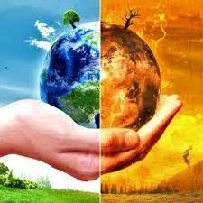
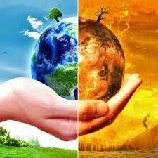

El Cambio Climático, un problema hecho por el hombre

Tipos de Cambio Climático
Fueron muchos los cambios que sucedieron en el clima a lo largo del tiempo, que han sido estudiados en su mayoría por la paleoclimatología, que muestra los cambios de la tierra durante un lapso de tiempo. Solo hay dos tipos de cambios climáticos:
Cambios climáticos del pasado: Es una serie de alteraciones en el clima marcadas por períodos fríos y períodos cálidos.
Cambios climáticos actuales: Es caracterizado por un aumento de la temperatura media global.

Fueron muchos los cambios que sucedieron en el clima a lo largo del tiempo, que han sido estudiados en su mayoría por la paleoclimatología, que muestra los cambios de la tierra durante un lapso de tiempo. Solo hay dos tipos de cambios climáticos:
